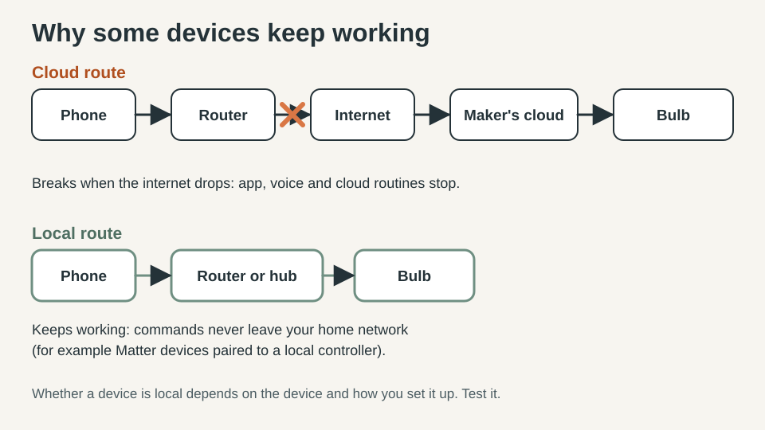
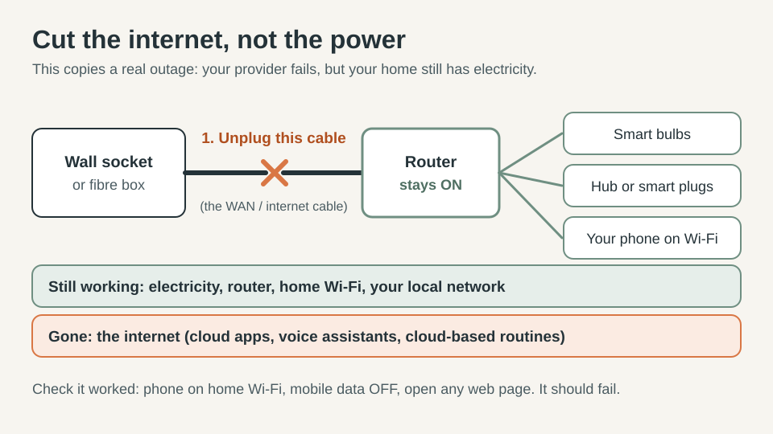
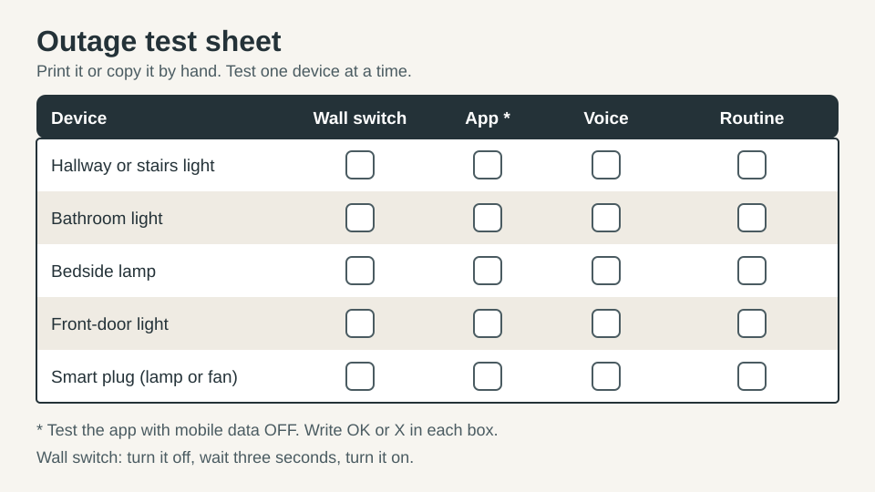
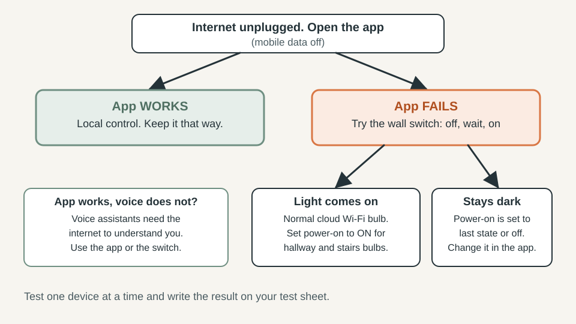

SMART HOME · SIMPLE AUTOMATION
What Happens to Your Smart Home When the Internet Goes Down? A 15-Minute Test

Your internet drops at 9 p.m. You walk into the hallway, say "turn on the light", and nothing happens. You open the app. It spins. You were told this was the easy way to run a home.
Here is the useful truth: you cannot know how your smart home behaves in an outage until you test it, and the test takes about 15 minutes. This guide gives you the exact method, how to read the results, and the small fixes that matter, without buying anything.
The quick answer
- Most smart bulbs still work as ordinary bulbs at the wall switch when the internet is gone.
- App control, voice control and cloud-based routines often stop, especially for Wi-Fi devices.
- Devices built for local control (for example Matter devices paired to a local controller) can keep working, but only if they were set up that way.
- The only reliable answer for your home is a short test.

Quick plan
| Time | About 15 minutes |
| Cost | Free |
| Best for | Beginners, renters and owners with a few smart lights or plugs |
| Goal | Know what still works, and make sure the lights you need always do |
Step 1: Pick the 5 devices you would miss
Do not test everything. Choose up to five: hallway or stairs light, bathroom light, a bedside lamp, the front-door light, and one plug. Write each one down with the app it uses.
Step 2: Cut the internet, not the power
You want to copy the most common outage: your internet provider fails, but your home still has electricity.
- Find the cable that runs from your router to the wall socket or fibre box (it is often called the WAN or internet cable) and unplug it. The router stays on.
- If your router and modem are a single box with no removable cable, skip to the note below.
- Confirm the internet is really off: on your phone, switch mobile data off, stay on home Wi-Fi, and try to open a web page. It should fail.
Note: turning the whole router off is a harsher test, because Wi-Fi devices and hubs lose their local network too. It is worth doing once, but expect worse results.

Step 3: Test each device four ways
| Device | Wall switch | App (mobile data off) | Voice | Schedule / routine |
|---|---|---|---|---|
| Hallway light | ? | ? | ? | ? |
| Bedside lamp | ? | ? | ? | ? |
Switching on a bulb at the wall means: turn the switch off, then on. Keep mobile data off for the app test. If your phone quietly uses mobile data, the app can reach the manufacturer's cloud and the test tells you nothing.

Step 4: Read your results
| What you see | What it means | What to do |
|---|---|---|
| Wall switch works, app does not | A normal Wi-Fi device that depends on the cloud | Learn the manual route; set power-on behaviour (below) |
| App works with the internet off | The device is controlled locally | Keep it that way; note which devices these are |
| App works, voice does not | Voice assistants need the internet to understand you | Plan on the app or the switch for outages |
| Schedule never fires | The routine runs in the cloud | Check whether your hub can run it locally |
| Bulb stays dark after the wall switch | Power-on behaviour is set to "last state" or "off" | Change the setting (below) |

Step 5: The fixes that actually matter
1. Set what a bulb does when power returns. Most smart bulb apps have a setting for this; it may be called "power-on behaviour" or "power loss recovery". For hallway, stairs and bathroom bulbs, choose "on", so a flip of the wall switch always gives you light. For bedrooms, "last state" or "off" avoids lights switching on at 3 a.m. after a power cut.
2. Leave the wall switch on. A smart bulb needs constant power to be controlled. If someone flips the switch off, the bulb drops offline in the app until it is switched back on. A small switch cover or a label ("leave on") stops guests and family from doing it by accident.
3. Do not flip a smart bulb on and off quickly. Some bulbs read several fast on/off cycles as a signal to reset or enter pairing mode. Flip once, wait a few seconds.
4. Make a one-line outage card. Write "Hallway: wall switch. Others: phone app on Wi-Fi" and keep it where the whole household can see it. It sounds basic, and it is the thing that actually helps at 9 p.m.
What not to buy yet
- A new hub or mesh system. Test first; you may already have what you need.
- A "smarter" version of the same bulbs. The weak point is usually the setup, not the bulb.
- A battery backup for the router. It helps in short power cuts, but it does nothing when the provider's service fails.
When you do buy something new, look for devices that support local control, such as Matter, and pair them to a controller in your home so they do not depend on a manufacturer's cloud.
Quick win (10 minutes)
- Turn mobile data off on your phone and try your lights through the app on home Wi-Fi.
- Open the app settings for your hallway bulb and set power-on behaviour to "on".
- Put a "leave on" label on the wall switch.
Common mistakes
- Testing with mobile data on.
- Testing only with voice, then assuming the lights are broken.
- Leaving the wall switch off and wondering why the bulb is "offline".
- Changing settings in the middle of a real outage, when the app may not respond.
FAQ
Do smart bulbs work without Wi-Fi?
Usually as ordinary bulbs at the wall switch. App control and voice control often stop for Wi-Fi bulbs. Bluetooth bulbs can still work near your phone, and hub-based systems vary.
Does Matter need the internet?
Matter is designed for local control and does not inherently need the internet to control devices on your home network, but remote access and some manufacturer features still do. Whether your setup stays local depends on the controller and how you paired the device.
Will Alexa, Siri or Google Assistant still work?
Voice assistants generally need the internet to process your voice. Some assistants support limited local voice control for certain devices; check your device's support page, then test it yourself.
Do I need a hub?
Not before you test. If the test shows that the lights you rely on fail, a hub or a local controller may be worth considering later.
Why did my lights switch on after a power cut?
That is the bulb's power-on setting. Change it in the bulb's app if you do not want that.
Keep going
- Smart lighting guide
- Motion lighting that actually helps
- Better evening lighting without overcomplicating it
Sources and further reading
- Home Assistant documentation on Matter: https://www.home-assistant.io/integrations/matter
- Matter Smarthome, "Local connection": https://matter-smarthome.de/en/benefits/benefits-of-matter-1-local-connection/
- MatterAlpha, "Do Matter devices work without the internet?": https://www.matteralpha.com/explainer/do-matter-devices-work-without-internet
- BGR, "Can you use a Google Home Hub without internet?": https://bgr.com/2077192/can-google-home-hub-work-without-internet/